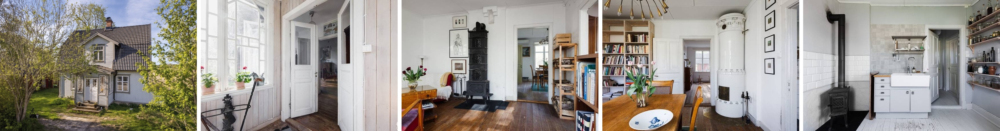
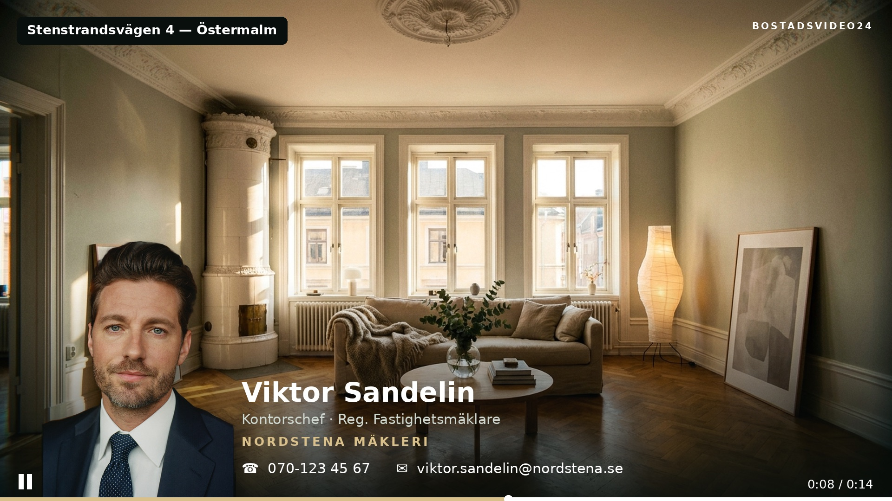

De flesta mäklarkontor har redan löst fotograferingen. Bilderna är proffsiga, ljussatta och levererade i tid — och sedan ligger de stilla, medan Hemnet numera spelar upp video direkt i annonsens bildgalleri. Bostadsvideo24 producerar färdig bostadsfilm av de bilder ni redan har betalat för. Ingen ny fotografering, ingen extra dag i kalendern, leverans inom 24 timmar.

En bra mäklarfotograf löser en avgränsad uppgift och löser den väl: objektet blir ljussatt, vinklarna blir rätt, och bilderna ligger i systemet inom ett par dagar. Det är därför de flesta kontor slutat fundera på fotofrågan — den är löst.
Men leveransen från en fastighetsfotograf är stillbilder. Det som händer sedan, när mäklarfoto ska bli ett rörligt format för Hemnet, för kontorets hemsida och för Instagram, ligger utanför uppdraget. Antingen görs det inte alls, eller så hamnar det hos en mäklare som klipper i telefonen mellan två visningar.
Under tiden har Hemnet flyttat fram positionerna. Sedan december 2024 spelas video upp direkt i annonsens bildgalleri i stället för bakom en knapp, och plattformens egen mätning visar att en annons med video delas vidare 76 procent oftare och sparas 31 procent oftare. Hemnet konstaterar samtidigt att ”idag är det ganska få mäklare som regelbundet jobbar med video i annonserna”. Det är en lucka som står öppen ett tag till.
Bostadsvideo24 fotograferar inte. Vi har ingen kamera på plats, vi bokar inga fototider och vi lämnar inga offerter på fotografering. Det är ett medvetet val, inte en begränsning: hela vår leveranstid bygger på att bilderna redan finns när uppdraget landar hos oss.
Det betyder att ni behåller den fotograf ni redan har och den relation som fungerar. Ingen ska säga upp ett avtal, ingen ska lära sig ett nytt bokningssystem, och ingen ska förklara för kontoret varför fotografen bytts ut. Ni lägger till ett steg efter fotograferingen i stället för att göra om ett steg som redan fungerar.
Det är också förklaringen till de tre löften som annars låter för bra: leverans inom 24 timmar går att hålla eftersom ingen ska resa någonstans, hela Sverige täcks eftersom avstånd inte kostar något, och priset kan vara fast per månad eftersom det inte finns någon restid att prissätta.
Samma bilder som redan gått till annonsen, plus objektets uppgifter. Inget nytt underlag ska tas fram.
Film byggd av era bilder, i era mallar och ert varumärke — med mäklarprofil i varje film.
Räknat från godkänt material, vardagar 08.00–17.00. Klar för Hemnet, er hemsida och sociala medier.

Samma objekt, tre användningsområden. Fotografens bilder blir kvar i annonsen — filmen läggs till bredvid dem.
| Kontorets storlek | Pris per mäklare och månad | Exempel |
|---|---|---|
| 3–5 mäklare | 2 400 kr | 5 mäklare = 12 000 kr/mån |
| 6–9 mäklare | 2 100 kr | 8 mäklare = 16 800 kr/mån |
| 10+ mäklare | 1 900 kr | 12 mäklare = 22 800 kr/mån |
Alla priser exkl. moms. Minst 3 platser. Rimlig användning: upp till 4 publicerade objekt per mäklare och månad. Uppstart och mallbygge i ert varumärke: 0 kr. Ingen bindningstid — 30 dagars uppsägning.
Bra — behåll hen. Det är hela förutsättningen för att det här ska fungera. Ju bättre bilder som kommer in, desto bättre blir filmen som går ut. Vi har inget intresse av att er fotograf byts ut.
Se exemplen här på sidan och döm själv — de är producerade på exakt det sättet. Vill ni veta hur ni ligger till innan ni bestämmer er? Börja med ert gratis Videoindex, så tar vi det därifrån.
Ingenting läggs om. Fotograferingen sker som i dag, bilderna kommer in som i dag, och det enda som tillkommer är att samma bilder även skickas till oss. Ingen ny fototid ska bokas och ingen mäklare ska lära sig ett redigeringsverktyg.
Om förseningen beror på Bostadsvideo24 får kunden videon utan kostnad. Leveranstiden är 24 timmar räknat från godkänt material, under vardagar mellan 08.00 och 17.00.
Nej. Bostadsvideo24 fotograferar inte och konkurrerar inte med er fotograf. Ni behåller den mäklarfotograf ni redan anlitar, och vi producerar filmen av de bilder ni ändå får levererade.
Nej. Fotograferingen står kontoret för, precis som i dag. Bostadsvideo24 levererar rörligt material producerat av de stillbilder som redan finns — det är därför ingen extra dag behöver bokas in i kalendern.
Vi utgår från bilderna ni redan har — ni behöver inte boka om fotografen. Men två saker avgör om filmen blir bra.
Skicka fotografens originalfiler, inte bilder nedladdade från Hemnet. Hemnet komprimerar och beskär bilderna till liggande webbformat. Ur en sådan bild går det inte att göra en snygg vertikal video till Instagram och TikTok utan att halva rummet försvinner. Originalen ligger i mappen eller länken ni fick från fotografen.
Riktmärke: minst 2 400 px bred, gärna större. Är ni osäkra — skicka in ändå, vi säger till direkt om något behöver kompletteras.
Det här fungerar inte:
Antal: 8–15 bilder per objekt ger bäst resultat. Har ni färre går det ofta ändå — hör av er så tittar vi på det.
Vi granskar alltid materialet innan produktionen startar. Duger något inte hör vi av oss samma dag, så ni vet direkt i stället för att upptäcka det i den färdiga filmen.
Inom 24 timmar från godkänt material. De 24 timmarna räknas under vardagar mellan klockan 08.00 och 17.00. Om en försening beror på Bostadsvideo24 får kunden videon utan kostnad.
Tre färdiga format: 16:9 för Hemnet och kontorets hemsida, 9:16 för Instagram, TikTok och Facebook, samt en mäklarprofil-bar med mäklarens porträtt och kontorets logotyp inlagd i filmen.
Fast pris per mäklare och månad — alla kontorets publicerade objekt ingår. Kontor med 3–5 mäklare betalar 2 400 kr per mäklare och månad, 6–9 mäklare 2 100 kr och 10 eller fler 1 900 kr. Alla priser exkl. moms. Minst 3 platser, 0 kr i uppstart och ingen bindningstid.
Hela Sverige. Eftersom filmen produceras av bilder som redan är tagna är leveransen inte beroende av att någon reser till objektet, och ingen ort ligger längre bort än någon annan.
Ert Videoindex visar kontorets videotäckning jämfört med samtliga mäklarkontor i er kommun — er fotograf behåller ni precis som i dag.
Få ert VideoindexFöredrar ni att höra av er direkt? info@bostadsvideo24.se · 076-028 87 32